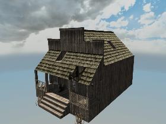

oldwest_sm_shop_02

XML
| CopyAirBlocks | True |
|---|
| AllowTopSoilDecorations | False |
|---|
| Zoning | Commercial |
|---|
| RotationToFaceNorth | 2 |
|---|
| AllowedTownships | wilderness,rural |
|---|
| Condition | Old |
|---|
| ExcludeDistantPOIMesh | False |
|---|
| TraderArea | False |
|---|
| SleeperVolumeSize | 9, 5, 12 |
|---|
| SleeperVolumeStart | -1, 0, 0 |
|---|
| SleeperVolumeGroup | S_-_Group_Ghost_Town,3,4 |
|---|
| SleeperVolumeGameStageAdjust | |
|---|
| SleeperIsLootVolume | False |
|---|
| DistantPOIYOffset | 0 |
|---|
| EditorGroups | oldwest |
|---|
| SleeperIsBossVolume | False |
|---|
| DifficultyTier | 1 |
|---|
| ExcludePOICulling | False |
|---|
Blocks
- air (Air)
- woodStairs25 (Wood Stairs)
- woodRailing3d (Wood Railing)
- woodBlock (Wood Block)
- woodPole (Wood Pole)
- cobweb (Cobweb)
- woodRamp (Wood Ramp)
- burntWoodRamp7 (Burnt Wood Ramp 7)
- woodChair1 (Wooden Chair)
- sleeperSit (Sleeper Sitting)
- boardedWindowsSheet4 (Window Boards)
- woodFenceFarmSheet (Wood Farm Fence)
- solidWoodFrameRamp (S Wood Frame Ramp)
- woodPlate (Wood Plate)
- metalReinforcedDoorWooden (Metal Reinforced Door)
- window03WoodFrame (Window03 Wood Frame)
- window03WoodBroke1 (Window 3 Wood Broke 1)
- cntTrash_can01 (Trash Can)
- cntTrashPile04 (Abandoned Rubbish)
- sleeperIdle (Sleeper Idle)
- scrapIronSheet (Iron Sheet)
- garbage_decor3 (Garbage decor3)
- porchLight01 (Old Outdoor Light (POI))
- cntCupboardCabinetOldTopLootHelper (= Cupboard Old = Random Helper)